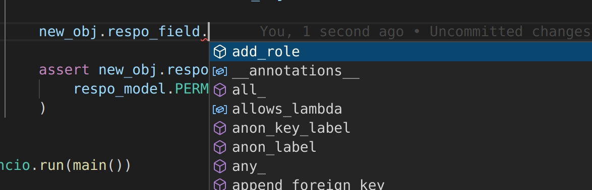
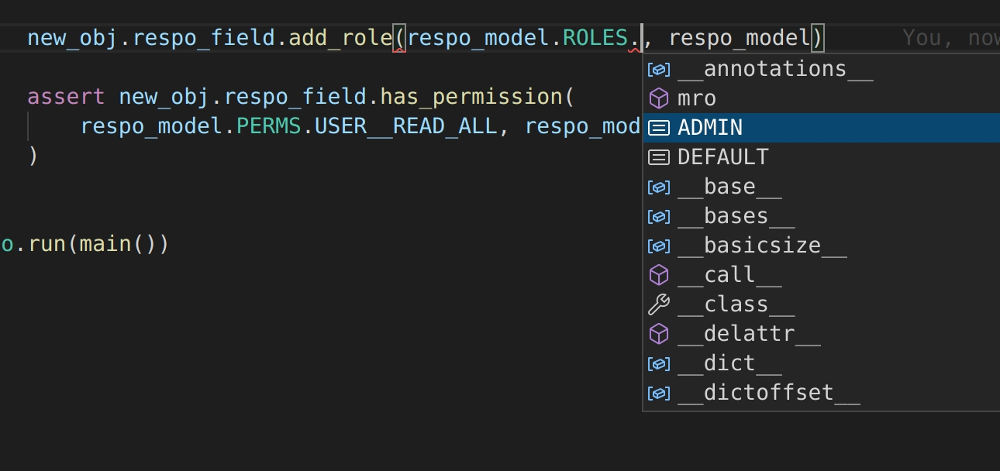
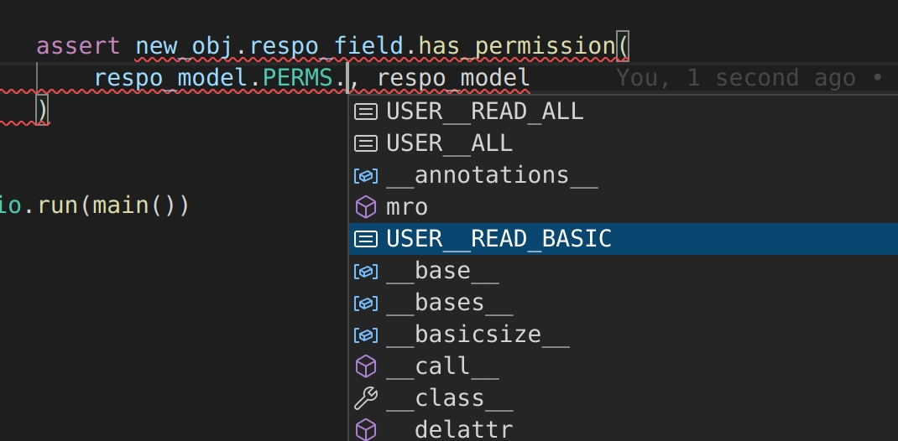

Overview
Introduction
respo states for resource policy and is tiny, user friendly tool for building RBAC systems based on static yml file, mainly with FastAPI framework in mind. In most cases – for even large set of roles – single file would be enough to provide restricting system access.
Features:
-
It provides custom fields for SQLAlchemy and Django to store users roles in database.
-
Implements R. Sandhu Role-based access control text.
-
Dead simple, fast and can be trusted – 100% coverage.
-
No issues with mutlithreading and multiprocessing – you just pass around already prepared, compiled respo_model (from file) in your app that is readonly.
-
Generates your roles, permissions offline and compile it to pickle file for superfast access in an app.
-
Detailed documentation and error messages in CLI command.
-
100% autocompletion and typing support with optional code generation for even better typing support.
Note, every piece of code in the docs is a tested python/yml file, feel free to use it.
Usage in FastAPI
The goal is to use simple and reusable dependency factory user_have_permission("some permission") that will verify just having User database instance if user have access to resoruce. Single endpoint must have single permission for it, and thanks to respo compilation step, every "stronger" permissions and roles would include "weaker" so we don't need to have the if statements everywhere around application.
1 2 3 4 5 6 7 8 | |
Declaring YML file with permissions, roles.
1 2 3 4 5 6 7 8 9 10 11 12 13 14 15 16 17 18 19 | |
There are 3 sections:
- permissions, list of double labels
"{collection}.{label}", they represent single permission that user can be given. - principles, list of principles where one can declare rules for permissions to contain others. For example, we want to some one that (through some role) have "more powerful" permission
user.read_allto also have access to resources that requireuser.read_basicpermission. - roles, list of roles objects, note that they have unique
name, set ofpermissionsand optional listincludeof other roles, so we can give admin role the same set of rules as default user (and add more powerful ones).
Parsing YML file to readonly pickle using respo CLI interface.
Thanks to Click, respo has powerful cli interface.
1 2 3 4 5 6 7 8 9 10 11 | |
That powerful command create serveral of things:
-
.respo_cache/__auto__respo_model.binfile (pickle format of model). -
.respo_cache/__auto__respo_model.ymlfile (yml format of model). -
respo_model.pyfile (python file of model for better autocompletion).
(Refer to User Guide for more information about first two of them.)
respo_model.py
Autogenerated file with class based on respo.RespoModel with bonus autocompletion.
1 2 3 4 5 6 7 8 9 10 11 12 13 14 15 16 17 18 19 20 21 22 23 24 25 26 27 28 | |
Usage in FastAPI and SQLAlchemy.
To interact with stateless, readonly respo_model created above, respo provides abstraction called RespoClient that can be stored in database as a custom respo SQLAlchemyRespoField field, be given or removed a role that can also check using respo_model instance its permissions.
1 2 3 4 5 6 7 8 9 10 11 12 13 14 15 16 17 18 19 20 21 22 23 24 25 26 27 28 29 30 31 32 33 34 35 36 37 38 39 40 41 42 43 44 45 46 47 48 49 50 51 52 53 54 55 56 57 58 | |
Note, thanks to smart types in RespoField for SQLAlchemy and auto generated typed file respo_model we have powerful autocompletions:


